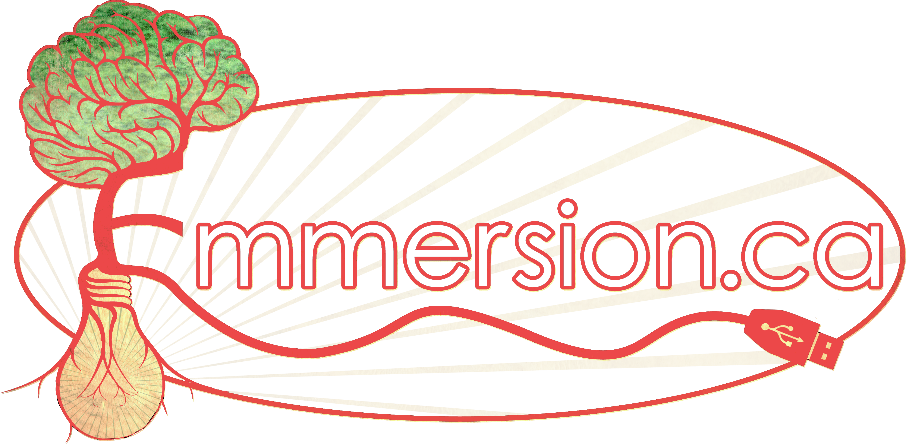

My Portfolio

Emmersion.ca
A mock company that I built to showcase my usual method of web construction. I like to code in HTML5, CSS3, and JavaScript on the front-end, with Node.js, Express.js, and .PHP on the back. I'm learning mySQL and MongoDB as I continue into the back-end.
GuildSaga.com
A website that I worked on to help launch an NFT-based video game. I oversaw the site from a single page application into the three page application here, and got some quality experience working with photo editing software (GIMP), working on a dev team, and working with Github throughout the process.
Resume Websites
A custom, online resumé allows people to display more infomation, and to do so through a more visually appealing medium than with a traditional resumé. They also tend to be far more accessible through linking and QRscanning (business cards). Check out mine as an example!
Professional Displays
The role of the web app is evolving, and people increasingly want their hobbies and projects either permanently displayed, or adequately published. Web apps are now integrating with more traditional print methods to accomodate this trend. I put my thesis online as an example of how this looks.
The Blog
Persistence throughout the Journey
There's a big difference between the skills required to cross a desert, and those required to climb a mountain. Many entrepreneurs do both, and some even learn to part water. The entrepreneur's journey is very similar to the hero's quest. There is a goal, and that goal must be reached against the ever-present possibility of total oblivion. But that goal is worth it, or else the journey would never happen...
Developing your Creative Self
Creativity is abundant throughout humanity, and is often indicative of a high intellect. Everyone is creative, yet many of us do not realize how creative we are, and then allow this thought to weigh down our self-perception even further. So how to stop this? One place to start looking would be to understand the importance of creativity to the self, and then work outwards from there...
The Grinder
It takes a certain mindset to not only understand that venturing out is a challenging endeavour, but to also appreciate that challenge as well. I wanted to explore the importance of entrepreneurship to the larger economy, but to do so from an individual's perspective. The Grinder looks at how capitalism not only benefits the indivdual, but enriches the community in which it serves as well...
The Economics of Truthiness
An expression around Christmas is that it's better to give than to receive, but did you know that this concept extends well beyond holiday miracles, and is actually the basis of a powerful Economics concept as well? Come explore the nature of 'opportunity cost' in this article, and learn why rhetoric such as: 'shop local' or 'honest work, honest pay' makes such strong economic sense...